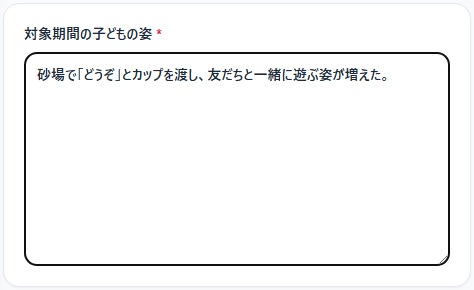
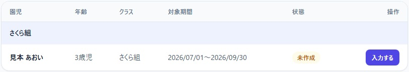
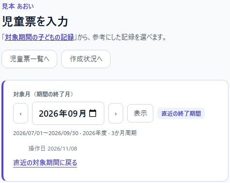
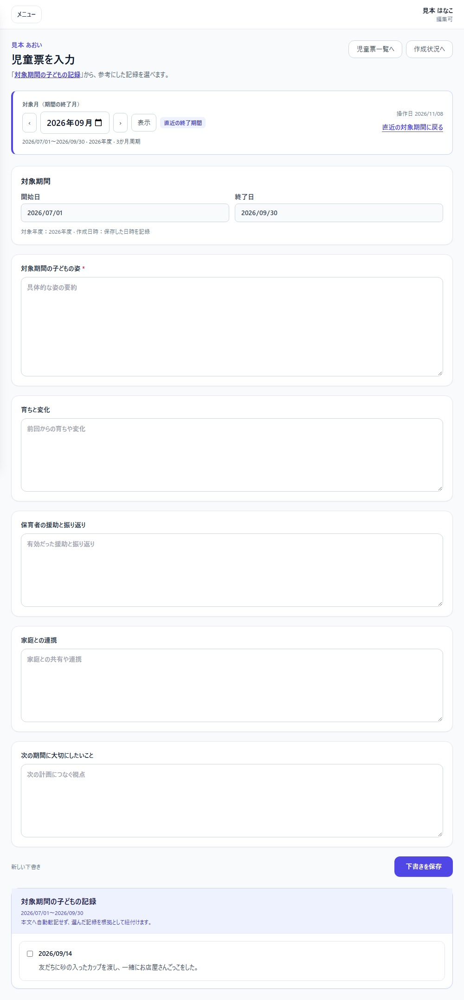
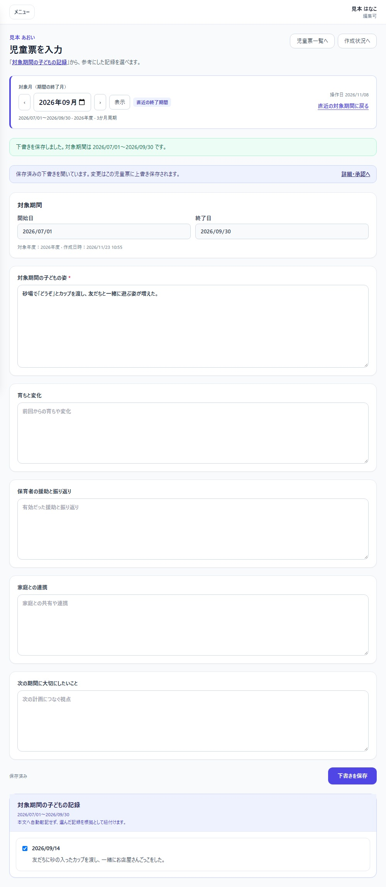
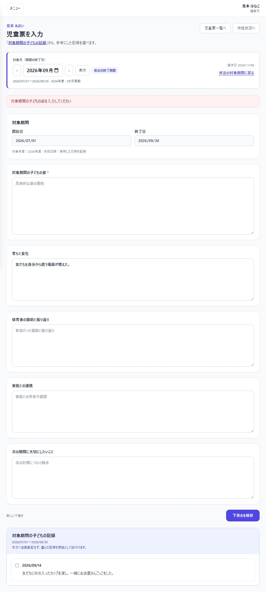
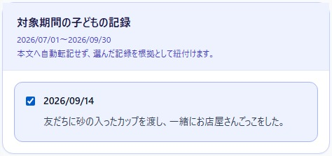
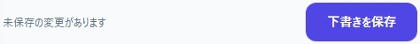
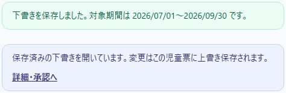
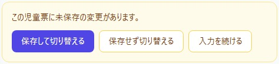

最初に、赤い「＊」が付いた「対象期間の子どもの姿」に書きます。「いつ、何をして、どんな言葉や動きがあったか」を一つ思い出すと書きやすくなります。
この欄に入力すると、ほかの欄が空でも下書きを保存できます。
お子さんが遊んでいたときの言葉や、できるようになったことを児童票に書きます。途中まで書いたら、下書きとして残せます。
「児童票作成状況」で、お子さんの名前と期間を見ます。その行の「入力する」を押します。書きかけの児童票は「続きを入力」で開きます。

「児童票を入力」の上にお子さんの名前があります。「対象月」の下で、開始日と終了日を確かめます。見本は3か月分なので「2026年09月」は期間の最後の月を表します。


最初に、赤い「＊」が付いた「対象期間の子どもの姿」に書きます。「いつ、何をして、どんな言葉や動きがあったか」を一つ思い出すと書きやすくなります。
この欄に入力すると、ほかの欄が空でも下書きを保存できます。
5つの本文欄と参考記録を含む画面全体です。画像を押すと拡大できます。



エラーが出たら、案内された欄を修正して保存し直します。保存を確認できないときは入力を続け、画面を閉じる前に保存結果を確認してください。

画面の上にある「対象期間の子どもの記録」を押します。記録の日付と内容を読み、使いたい記録にチェックを入れます。
チェックを入れると、どの記録を参考にしたかを一緒に保存できます。本文は自分で書きます。記録がないときは、そのまま保存に進めます。

本文の一番下にある「下書きを保存」を押します。スマートフォンで過去の記録を選んだときは、少し上に戻ると見つかります。
画面の上に「下書きを保存しました。」と出たら、いったん作業を終えても大丈夫です。次は「児童票作成状況」の「続きを入力」から開けます。


書き足した内容も読んでもらうときは「保存して切り替える」を押します。
書き続けるときは「入力を続ける」を押します。「保存せず切り替える」を押すと、前に保存した内容が開き、今回の追記は消えます。
画面の人物・記録はすべて架空です。実際の入力や依頼は園のアプリで行います。2026年11月23日に保存済み配備版と照合した確認原稿です。